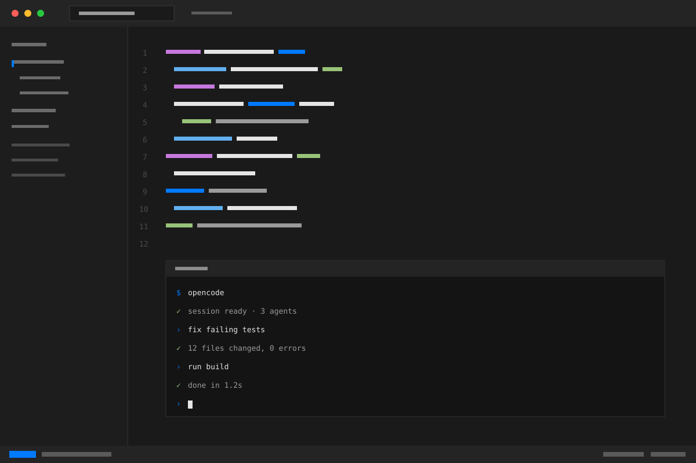
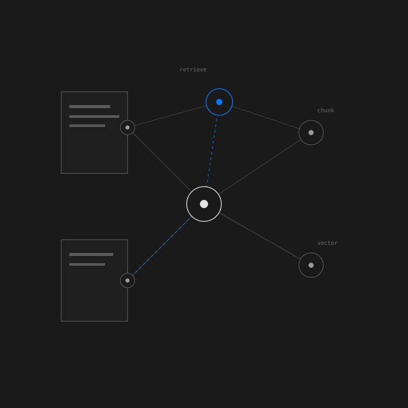
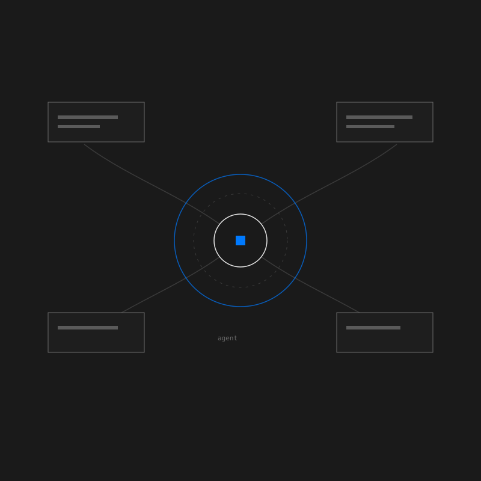
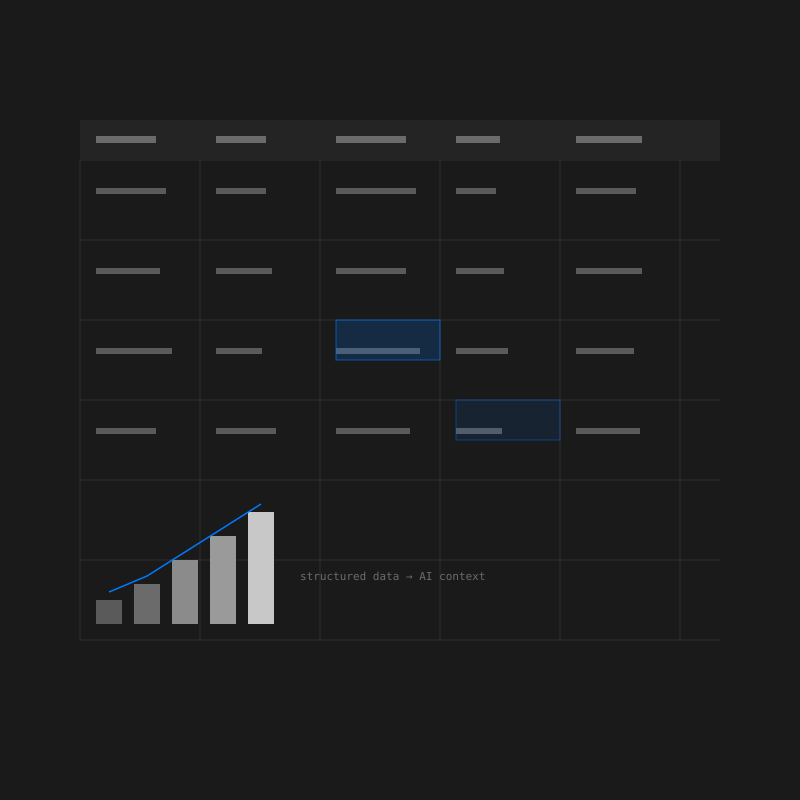

大模型应用与微调
把通用模型调成懂业务的专用工具。
十一年工程造价与工程数据经验，如今专注把 AI 真正接进业务现场——大模型微调、Agent 工作流、RAG 知识库，以及能跑在生产里的工具链。
// 价值不在演示，在真实场景里跑得通、算得准、可验证。

从模型到应用，把智能做成可交付的工程。
把通用模型调成懂业务的专用工具。
让智能体有边界、有记忆、能交付。
让行业经验可被检索、可被复用。
从实验到可运行的产品闭环。
聚焦 AI 应用与开发，少量但可核对。

自用的桌面 AI 客户端，验证造价场景下的提示词模板、知识库检索与批处理工作流——把 AI 真正接进日常业务的实验场。

大模型微调（LoRA / PEFT）、RAG 知识库搭建与 Skill 封装，把一次性的实验沉淀成可复用的能力模块与 SOP。

一个安静读群、被 @ 才开口的陪聊 Agent。重点不是话术，而是边界：记得住上下文、不翻旧账、对刷屏和广告冷淡处理。

Rust 投标计价引擎，从人材机含量重算综合单价、生成标准报表。让行业经验先变成干净的数据，再成为 AI 可用的上下文。
领域经验与 AI 能力的交叉点。
造价工程师出身，十一年专注工程数字化；近两年把重心转向 AI 应用开发。
习惯先摸清口径与数据，再写成可重复验证的工具。过去是把现场变成清楚的数字，现在是把大模型、Agent 和自动化工具接进这些数字里——让靠人经验判断的事情，变成可计算、可验证的系统。
不迷信默认参数，也不迷信第一版结论。
有 AI 应用、工程数据工具或开源协作的想法，来 GitHub 找我。通常 1–2 个工作日内回复。
github.com/Kissshot-2003 ↗